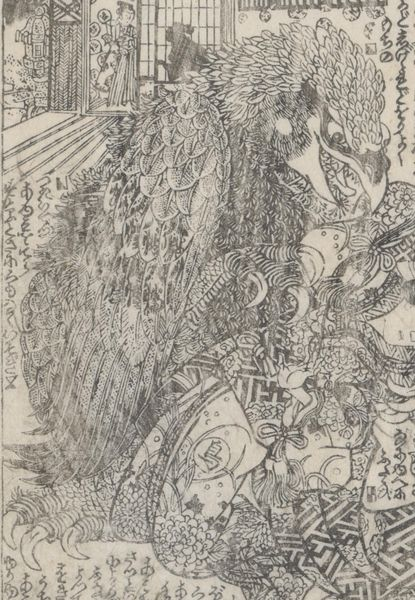

← 图鉴索引

鷲の化物が女を掴んでいる。手が生えている。
著作者：柳水亭種清作・梅蝶樓國貞画／出典：親書誌：U426_nichibunken_0447：戀車淀翡翠／日付：2017／資源識別子：U426_nichibunken_0447_0011_0000
Copyright (c)2010- International Research Center for Japanese Studies, Kyoto, Japan. All rights reserved.